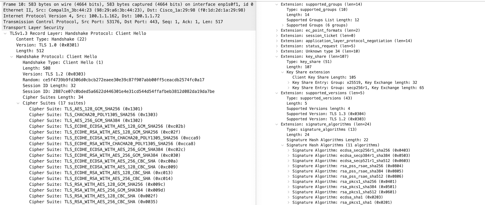

启用 TLS 1.3 提升网络应用的安全性和性能
TLS（传输层安全）是一种用于保护网络通信的加密协议，TLS 1.3 是 TLS 协议的最新版本。TLS 1.3 的引入旨在提供比以前版本更强大的安全性、隐私保护和性能。这里对比其所取代的 1.2 版本，对 TLS 1.3 做一个简单的介绍。并且，针对基于 OpenSSL 的网络应用，给出了使用和实现 TLS 1.3 的示例。
TLS 1.3 简介
TLS 1.3 是最新推荐的加密协议，适用于保护各种网络通信，包括网页浏览、电子邮件、在线交易、即时通讯、移动支付和其他许多应用。通过使用 TLS 1.3，可以建立更安全、更可靠的通信连接，确保数据的私密性和完整性。它于2018年8月由互联网工程任务组（IETF）标准化，发布于文档 RFC 8446。
TLS 1.3 引入了与 TLS 1.2 相比的一些重要改进。下表呈现了二者的简要比较：
| 比较方面 | TLS 1.2 | TLS 1.3 |
|---|---|---|
| 协议设计 | 请求-响应模型 | 减少往返次数 |
| 握手过程 | 多次往返 | 单次往返 |
| 密码套件 | 支持范围广泛，包括一些不安全的算法 | 着重于更强的密码算法 |
| 安全性 | 有已知漏洞（如CBC漏洞等） | 解决了先前问题，更强的安全性 |
| 性能 | 多次往返造成高延迟 | 连接建立更快 |
| 抵御攻击 | 易受到降级攻击和填充应答攻击 | 有额外防护减少攻击风险 |
| 兼容性 | 在不同平台上得到广泛支持 | 支持率逐渐提升，老旧系统可能不可用 |
| 实现支持 | 有许多密码库可用 | 各种库软件都提供支持 |
可以看出，强化的安全性和性能提升是 TLS 1.3 最显著的特性，以下对此展开作一些介绍。
安全强化
密码套件
TLS 1.3 的协议设计理念以增强安全性为首要目标。由此，TLS 1.3 大幅减少了支持的密码套件数量。它移除了不安全和有弱点的密码套件，仅保留了更安全和现代的密码套件。这样有助于提高通信的安全性，避免使用过时或易受攻击的密码套件。
具体地说，TLS 1.3 删除了各种使用RSA密钥传输、静态迪菲—赫尔曼密钥交换、CBC操作模式或SHA-1的密码套件。它只采纳了有限的几个带有关联数据的认证加密（AEAD）密码套件。AEAD 能够同时保证数据的保密性、完整性和真实性，其高安全性使其成为TLS 1.3 的排他性选择。
另一方面，以前 TLS 版本中的密码套件命名中包括密钥交换、数字签名、加密及消息验证全部算法。每个密码套件在一个名为 "互联网编号分配机构"（IANA）的组织维护的表格中都拥有一个编码位。每推出一种新的密码算法，就需要在列表中添加一系列新组合。这导致了总体有效选择的编码位数目激增，整个列表已经变得非常庞大。这种情况也使得密码套件的取舍变得复杂而混乱。
TLS 1.3 的设计改变了密码套件的概念。它将密钥交换机制和数字签名认证剥离出来，新的密码套件命名规则是TLS_<AEAD算法>_<散列算法>。其中散列算法用于 TLS 1.3 新定义的密钥派生函数 HKDF 和生成握手阶段的消息验证码 (MAC)。TLS 1.3 协议所支持的密码套件有：
1 | +------------------------------+-------------+ |
这种简化的密码套件定义和大幅减少的协商参数集，也可以加速 TLS 1.3 的握手过程，从而提高了整体性能。
密钥交换
TLS 1.3 强调前向保密性（forward secrecy），确保通信的私密性即使在长期密钥泄露的情况下也能得到保护。它只允许基于临时迪菲-赫尔曼密钥交换（DHE）或临时椭圆曲线迪菲-赫尔曼密钥交换（ECDHE）的共享密钥方法。二者都具有前向保密特性。并且，协议明确限定了密钥交换所使用的有安全保障的椭圆曲线群和有限域群：
1 | /* Elliptic Curve Groups (ECDHE) */ |
以上用于 ECDHE 的椭圆曲线群由RFC 8422指定。前三个是 FIPS.186-4 规范定义的，对应的 NIST 命名为 P-256/P-384/P-512，而后两种（x25519/x448）是 ANSI.X9-62.2005 推荐的。RFC7919详细说明了用于 DHE 的四个有限域群（ffdhe####）。这些有限域群中的素数都是安全素数（safe prime）。
如果素数 \(p\) 满足 \(q = (p-1) /2\) 也是素数的条件，那它就是安全素数。
签名验证
对于密钥交换阶段的签名验证，TLS 1.3 引入了更多的签名算法套件，以适应不同的安全需求：
- RSA-PKCS1 签名算法：TLS 1.3 仍然支持握手的双方验证对方使用以 RSA-PKCS1-v1_5 签名的证书，但不允许将此算法用于握手签名。
- RSASSA-PSS 签名算法：TLS 1.3 引入了 RSASSA-PSS 签名算法，它是基于 RSA 的一种更安全的签名方式，具有更好的抗攻击性。
- ECDSA 签名算法：TLS 1.3 也引入了更多的基于椭圆曲线密码学（ECC）的签名算法，如ECDSA-SHA256、ECDSA-SHA384等。这些算法使用椭圆曲线密钥来进行数字签名，通常在安全性和性能方面优于RSA。
- EdDSA 签名算法：TLS 1.3 还加上了基于 Edwards 曲线的 EdDSA（Edwards-curve Digital Signature Algorithm）签名算法。它具有高效性能和强大的安全性，适用于移动设备和资源受限的环境。
- PSK 签名算法：TLS 1.3 支持基于预共享密钥（PSK）的签名算法，适用于 PSK 握手模式。这种方式不涉及数字签名，而是使用预共享密钥进行验证。
TLS 1.3 停止使用 DSA（Digital Signature Algorithm）签名算法。这也是与 TLS 1.2 的一个显著不同。 DSA 存在一些安全性和性能方面的限制，并且在实践中很少使用，因此 TLS 1.3 移除了对 DSA 证书的支持。
其他改进
此外，TLS 1.3 还包括以下改进增强安全性
- TLS 1.3 不允许数据压缩。TLS 早期版本中的数据压缩功能可能导致 CRIME 攻击等安全问题。为了避免这种风险，TLS 1.3 完全取消了对数据压缩的支持。
- 与早期版本的TLS不同，TLS 1.3 禁止在连接建立后进行再协商。这有助于减少安全风险和复杂性。重新协商可能引入新的安全漏洞，而且在连接过程中的频繁协商也可能导致性能问题。
- TLS 1.3 握手过程中服务器问候
ServerHello消息之后的所有握手信息现在都被加密。新引入的加密扩展EncryptedExtensions消息使以前用明文发送的各种扩展信息也能得到加密保护。 - TLS 1.3 对服务器发送到客户端的证书消息实施非对称加密保护。这种加密可以防止中间人攻击、信息泄露和证书伪造等威胁，进一步增强连接的安全性和隐私保护。
性能提升
简化的握手过程
高速移动互联网的发展大趋势要求尽可能地使用 HTTPS/TLS 保护所有流量的私密性。这样做的不利之处是新连接会变得有点慢。为了让客户机和网络服务器达成一致的密钥，双方需要通过 TLS “握手过程” 交换加密数据。在 TLS 1.2 及其之前的所有协议中，初始的握手过程都要求至少两次往返消息传递。与单纯的 HTTP 相比，HTTPS 的 TLS 握手过程所产生的额外延迟会对注重性能的应用程序非常不利。
TLS 1.3 大幅简化了握手过程，在大多数情况下仅需要一次往返，从而加快了连接建立速度和降低了延迟。每个 TLS 1.3 连接都将使用基于 (EC)DHE 的密钥交换，而服务器支持的参数可能很容易猜到（比如 ECDHE + x25519 或 P-256）。由于选择有限，客户端可以直接在第一条信息中发送 (EC)DHE 密钥共享信息，而不用等到服务器确认它愿意支持哪种密钥交换。这样，服务器就可以提前一轮推导出共享密钥并发送加密数据。
下面是 TLS 1.2 和 TLS 1.3 的握手过程消息序列对比图，TLS 1.3 的握手使用以下借用自RFC 8446规范的符号：‘+’表示值得注意的扩展名；‘*’指可选消息或扩展名；‘[]’、‘()’和‘{}’表示加密过的消息，其中用于加密的密钥各不相同。
参考此图，说明下面几点：
- 可以明显看出 TLS 1.3 删除了 TLS 1.2 使用的几条消息：
ServerHelloDone、ChangeCipherSpec、ServerKeyExchange和ClientKeyExchange。TLS 1.2 的服务器密钥交换（ServerKeyExchange）和客户端密钥交换（ClientKeyExchange）消息的内容随协商的身份验证和密钥共享方法而变化。在 TLS 1.3 中，这些信息被移至ClientHello和ServerHello消息的扩展中。TLS 1.3 完全弃用了ServerHelloDone和ChangeCipherSpec消息，没有替换。 - 对于 TLS 1.3 基于公钥的验证模式可能是最重要的。它总是使用 (EC)DHE 来实现前向保密。图中显示了必须在这种模式下使用的
ClientHello中的四个扩展：key_share、signature_algorithms、supported_groups和support_versions。 - 在 TLS 1.2 握手过程中，控制数据的交换需要在客户端和服务器之间多次往返。TLS 1.2 的
ClientKeyExchange和ChangeCipherSpec消息由分开的数据包传输，完成（Finished）消息是第一条（也是唯一一条）加密的握手消息。整个过程要传输5～7个数据包。 - 在 TLS 1.3 握手过程中，加密的应用数据（
Application Data）已在第一轮往返后由客户端发送。如前所述，加密扩展（EncryptedExtensions）为 TLS 早期版本中ServerHello中的许多扩展提供了私密保护。如果需要相互验证（这在物联网部署中很常见），服务器将使用证书请求（CertificateRequest）消息。 - TLS 1.3 中的证书（
Certificate）、证书验证（CertificateVerify）和完成（Finished）消息保留了早期 TLS 版本的语义，但是它们都是使用非对称加密的消息。通过加密证书和证书验证消息，TLS 1.3 能够更好地防止中间人攻击和伪造证书攻击，同时增强连接的隐私。这也是TLS 1.3 设计中的一个重要安全特性。
在极少数情况下，当服务器不支持客户端发送的某个密钥共享方法时，服务器可以发送一条新消息HelloRetryRequest，让客户端知道它支持哪些群。由于群列表已大幅缩减，预计这种情况不会经常发生。
0-RTT 会话恢复
TLS 1.3 中的 0-RTT（Zero Round Trip Time，0往返时间）是一种特殊的握手模式。它允许客户端在握手阶段就发送加密数据，从而减少了连接建立所需的往返次数，实现更快的会话恢复。下面是 0-RTT 工作模式的简要解释：
- 记录会话票据：在正常的 TLS 1.3 握手过程中，客户端和服务器会在握手期间生成一个称为"会话票据"（Session Ticket）的数据结构。会话票据包含了有关连接的信息，包括密钥参数和加密套件等。服务器会将客户端提供的会话票据存储起来。
- 0-RTT 握手：当客户端重新连接服务器时，它会在
ClientHello消息的early_data扩展中包含之前记录的会话票据，同时附带加密的应用数据。客户端使用之前的连接中获得的预共享密钥（PSK）来加密 0-RTT 数据。 - 服务器响应：服务器接收到此消息后，如果支持 0-RTT 模式并且能够识别和验证会话票据，它会发送一个
EncryptedExtensions消息，然后在Finished消息中确认连接。这样，服务器可以在0个往返的情况下立即建立安全连接。服务器接着也可以立即向客户端发送数据，以实现 0-RTT 数据的传输。
TLS 1.3 的 0-RTT 会话恢复和数据传输过程的消息序列如下：
常见问题
TLS 1.3 协议允许使用 RSA 数字证书吗？
一个常见的误解，是说“TLS 1.3 不兼容 RSA 数字证书”。显然，以上的“签名验证”一节的描述说明这是错误的。TLS 1.3 仍然支持使用 RSA 进行密钥交换和身份验证。然而，考虑到 RSA 的安全性问题，推荐在构建和部署新的TLS 1.3应用程序时，首选 ECC 密钥交换算法和数字证书来实现更高的安全性和性能。
TLS 1.3 握手过程中，服务器如何指定要求客户端提供证书？
在某些场景下，服务器也需要验证客户端的身份，确保只有合法的客户端才能访问服务器资源。这就是使用mTLS（Mutual TLS）的情况。TLS 1.3 握手过程中，服务器可以通过发送一个特殊的证书请求（
CertificateRequest）扩展来指定要求客户端提供证书。当服务器决定要求客户端提供证书时，它在ServerHello消息之后发送CertificateRequest扩展消息。这个扩展消息包含了一些必要的参数，如支持的证书类型列表、可接受的证书颁发机构列表等。客户端收到后会知道服务器要求它提供证书，它可以选择性地响应请求。如果客户端也配置了对 mTLS 的支持，决定提供证书，就通过发送Certificate消息来提供其证书链。0-RTT 是否会有遭受重放（replay）攻击的风险？
TLS 1.3 的 0-RTT 会话恢复模式没有互动，在某些情况下确实会面临重放攻击的风险。攻击者可能重复之前发送的数据，以模拟合法的请求。为了最大程度地避免和减少重放攻击的风险，TLS 1.3 提供了一些保护措施和建议：
- 最简单的防重放方法是服务器只允许每个会话票据使用一次。 例如，服务器可以维护一个包含所有尚未使用的有效票据的数据库，在每张票据被使用时将其从数据库中删除。如果收到了未知的票据，服务器就会退回到完全握手状态。
- 服务器可以限制接受会话票据的时间窗口，即允许 0-RTT 数据有效的时间范围。这样可以减小攻击者成功重放的可能性。
- 客户端和服务器还应该将 0-RTT 数据仅用于无状态的请求，即不会对服务器状态产生影响的请求如 HTTP GET。对于需要修改服务器状态或产生影响的请求，限制仅使用正常的握手模式。
- 防重放的另一种方法是记录从 ClientHello 导出的唯一值（通常是随机值或 PSK 捆绑值），并拒绝重复。 记录所有 ClientHellos 会导致状态无限制增长，但结合上面的第2条，服务器可以在给定的时间窗口内记录 ClientHellos，并使用 "obfuscated_ticket_age"（混淆票据年龄）来确保票据不会在窗口外被重复使用。
如果客户端不知道服务器是否支持 TLS 1.3，应该如何选择 TLS 握手方式？
TLS 协议提供了一种内置机制协商端点之间的运行版本。TLS 1.3 继续了这一传统。RFC 8446 附录 D.1 “Negotiating with an Older Server”给出具体的说明：
A TLS 1.3 client who wishes to negotiate with servers that do not support TLS 1.3 will send a normal TLS 1.3 ClientHello containing 0x0303 (TLS 1.2) in ClientHello.legacy_version but with the correct version(s) in the "supported_versions" extension. If the server does not support TLS 1.3, it will respond with a ServerHello containing an older version number. If the client agrees to use this version, the negotiation will proceed as appropriate for the negotiated protocol.
这段话的意思是，如果 TLS 1.3 客户端希望与不支持 TLS 1.3 的服务器进行协商，则发送一个包含 TLS 1.2 版本号的正常
ClientHello消息，同时在该消息的supported_versions扩展中填入所支持的版本号（TLS 1.3 和 TLS 1.2）。如果服务器不支持 TLS 1.3，它就会回应一个包含 TLS 1.2 版本编号的ServerHello。 如果客户端同意使用该版本，握手过程将按照协商协议的适当方式继续进行。下面的 TLS 1.3
ClientHello数据包分析截图清晰地展现了这一点。在左边显示的握手消息的版本号为“Version: TLS 1.2 (0x0303)”，同时可以看到密码套件部分先列出了3个 TLS 1.3 AEAD密码套件，后面跟着14个 TLS 1.2 常规密码套件。右边有key_share、signature_algorithms、supported_groups和support_versions4个扩展。support_versions扩展包括 TLS 1.3 和 TLS 1.2 两个版本号。这就是给出了供服务器选择的 TLS 版本。另外key_share扩展列出了客户端首选的密钥共享方法为x25519和secp256r1（即 NIST P-256）
TLS 1.3 协议适用于 UDP 和 EAP 吗？
TLS 最初是为 TCP 连接设计的，后来引入了适用于 UDP 的变体 DTLS（Datagram Transport Layer Security）。以 TLS 1.3 为基础，IETF 推出了相应的升级版 DTLS 1.3 协议RFC 9147。DTLS 1.3 的设计目标是提供“[与 TLS 1.3] 同等的安全保证，但次序保证和不可重放性除外”。此协议发布于2022年4月，目前支持它的软件库还不多。
TLS 也可以在多种 EAP 类型中用作认证和加密的协议，如 EAP-TLS、EAP-FAST 和 PEAP 等。对应 TLS 1.3，IETF 也公布了两个技术标准文档：
- RFC 9190: EAP-TLS 1.3: Using the Extensible Authentication Protocol with TLS 1.3（2022年2月）
- RFC 9427: TLS-Based Extensible Authentication Protocol (EAP) Types for Use with TLS 1.3（2023年6月）
这两个协议也都很新，支持它们的软件库更新还有待时日。
应用和实现
TLS 1.3 强化的安全性和优化的性能使其成为各类网络应用程序安全通信的首选。下面先针对典型的三大网页服务器软件 Apache、Nginx 和 Lighttpd，简单介绍一下如何启用它们 TLS 1.3 功能。最后给出了在自己开发的应用软件中实现 TLS 1.3 的程序示例。
注意：许多网络应用程序的安全通信实现依赖于第三方的 SSL/TLS 编程软件库，比如wolfSSL、GnuTLS、NSS 和 OpenSSL等。因此要开启这些应用的 TLS 1.3 功能，需要确保它们使用的链接库支持 TLS 1.3 。比如2018年9月，流行的 OpenSSL 项目发布了 1.1.1 版本的库，其中支持 TLS 1.3 是其 "首要的新功能"。
Apache HTTP 服务器应用
Apache HTTP 服务器是Apache软件基金会的一个开放源码的网页服务器软件。由于其跨平台和安全性，Apache HTTP 服务器被广泛使用，是最流行的Web服务器软件之一。Apache支持多种特性，其中许多通过编译的模块实现核心功能的扩展，比如身份验证方案、代理服务器、URL 重写、SSL/TLS 支持，以及将Perl/Python等解释器编译到服务器中等。
Apache HTTP 服务器从 2.4.36 版本开始内建对 TLS 1.3 的支持，无需安装任何附加模块或补丁。下面的命令可用来验证服务器的版本
1 | $ apache2ctl -v |
版本验证无误后，就可以更新配置文件的SSLProtocol行。如下将使 Apache HTTP 服务器只支持 TLS 1.3 协议
1 | # 只启用TLS 1.3 版本协议 |
如果需要兼容支持 TLS 1.2 的客户端，可以加上+TLSv1.2。更新配置之后，重启服务
1 | $ sudo service apache2 restart |
Nginx 应用
Nginx 是基于异步框架和模块化设计的高性能网页服务器，也可以用于反向代理、负载均衡器和HTTP缓存应用。它是根据类BSD许可证条款发布的免费开源软件。Nginx 使用异步事件驱动的方法来处理请求，可以在高负载下提供更可预测的性能。当前 Nginx 的市场占有率与 Apache HTTP 服务器几乎持平。
Nginx 从 1.13.0 版本 开始支持 TLS 1.3。下面的命令可用来验证 Nginx 的版本
1 | $ nginx -v |
在 Nginx 的配置文件中，找到server块并修改ssl_protocols行就可以启用 TLS 1.3：
1 | server { |
如果不需要继续支持 TLS 1.2，可以删除前面的TLSv1.2。修改完成，可以运行以下命令测试Nginx 的配置，然后重启服务
1 | $ sudo nginx -t |
Lighttpd 应用
Lighttpd（发音为"lighty"）是一个轻量级的开源网页服务器软件。它专注于高性能、低内存占用和快速的响应速度。Lighttpd适用于各种规模的网页应用和静态内容的提供。它的设计目标是提供一个高效、灵活和可扩展的网页服务器，尤其适用于高负载和资源受限（如嵌入式系统）的环境。
第一个支持 TLS 1.3 的 Lighttpd 发布是 1.4.56 版。从这个版本开始，Lighttpd 默认支持 TLS 的最低版本是 TLS 1.2。也就是说，如果不做相应的配置文件修改，这时 Lighttpd 支持 TLS 1.2 和 TLS 1.3。
要限定只使用 Lighttpd 的 TLS 1.3 功能，先确保 mod_openssl 模块已加载。然后在配置文件 lighttpd.conf 中 ，找到server.modules部分，添加以下ssl.openssl.ssl-conf-cmd行：
1 | server.modules += ("mod_openssl") |
这将设定 Lighttpd 支持的最低版本是 TLS 1.3。最后保存并重新加载 Lighttpd 配置，使更改生效：
1 | sudo lighttpd -t -f /etc/lighttpd/lighttpd.conf # 检查配置是否正确 |
软件实现
如果是自己设计和实现的网络安全应用，先确认使用的链接库是否支持 TLS 1.3。以 OpenSSL 库为例，执行如下的两个openssl命令行检查系统安装的版本和所支持的 TLS 1.3 密码套件：
1 | $ openssl version |
如上第一个命令的输出结果显示所使用的 OpenSSL 库的版本是 1.1.1f，是支持 TLS 1.3 的。第二个命令的输出也证实了默认可以使用的三个 TLS 1.3 密码套件。
下面是用C语言编写的 TLS 1.3 客户端和服务器的简单示例程序：
1 |
|
1 |
|
上述示例仅提供了 TLS 1.3 最基本的客户端和服务器实现。实际应用中，需要预先生成有效的证书和私钥，并根据具体需求进一步优化和扩展代码。
还可以观察到在上面的示例中，客户端和服务器的程序都没有明确指定 TLS 1.3 版本。为什么？这是因为在 OpenSSL 1.1.1 及以上版本中，TLS 1.3 是默认启用的。因此在 TLS 客户端和服务器的上下文ctx中，不需要显式指定 TLS 版本。在使用OpenSSL库时，默认情况下会使用最高版本的 TLS，即 TLS 1.3（如果双方都支持）。如果对方不支持 TLS 1.3，它会尝试使用较旧的 TLS 版本来建立连接。
如果希望限定 TLS 版本，可以在上下文中明确指定所需的 TLS 版本。例如，在 TLS 客户端示例中，如果你希望明确指定只能使用 TLS 1.3 版本，可以像这样修改代码：
1 | // 创建TLS 1.3上下文 |
在 TL S服务器示例中，你也可以使用类似的方式明确指定 TLS 1.3 版本：
1 | // 创建TLS 1.3上下文 |
如果想要限定协议的最低版本为 TLS 1.2，可以修改SSL_CTX_set_min_proto_version()的调用参数
1 | // 创建TLS 上下文 |
总之，通过调用SSL_CTX_set_min_proto_version()和SSL_CTX_set_max_proto_version()函数，我们可以精准限定所支持 TLS 协议的版本范围。